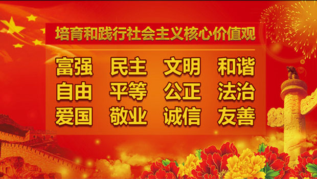

返回主页
社会主义核心价值观

社会主义核心价值观是社会主义核心价值体系的内核，体现社会主义核心价值体系的根本性质和基本特征，反映社会主义核心价值体系的丰富内涵和实践要求，是社会主义核心价值体系的高度凝练和集中表达。
从左到右，从上到下，依次而来。友善（friendly）是需要提出来讨论的。请参考周星驰的《西游・降魔篇》
有什么样的人民，就有什么样的政府。三个代表！
Such a principle, stripped of all disguise, is surely the mere primitive doctrine that might is right. Survival of the Fittest. George VI & Feyerabend （法国后现代，Khmer Rouge）
“八荣八耻”是“社会主义荣辱观”的简称。2006年3月4日，中共中央总书记胡锦涛在看望政协委员时强调，要引导广大干部群众特别是青少年树立社会主义荣辱观，坚持以热爱祖国为荣、以危害祖国为耻，以服务人民为荣、以背离人民为耻，以崇尚科学为荣、以愚昧无知为耻，以辛勤劳动为荣、以好逸恶劳为耻，以团结互助为荣、以损人利己为耻，以诚实守信为荣、以见利忘义为耻，以遵纪守法为荣、以违法乱纪为耻，以艰苦奋斗为荣、以骄奢淫逸为耻。
精英阶层如何主宰民选政府
中国共产党党内监督条例
version:1.0; jobnet@188.com © retter2012.com